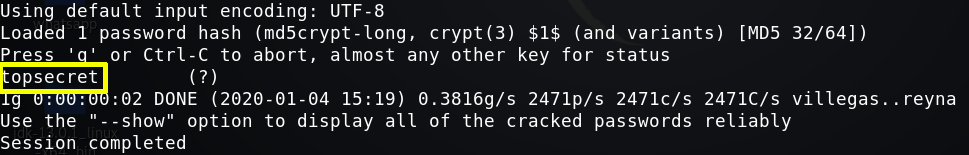
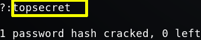

6. Password Cracking
Crack the password with “john” tool, using rockyou.txt dictionary and “md5crypt-long”.
On your Kali Linux Machine
Create a file called hash.txt and copy the md5 password (
$1$flag$vqjCxzjtRc7PofLYS2lWf/
) on it.
Run the following code.
$ john --wordlist=
/
usr
/
share
/
wordlists
/
rockyou.txt --format=md5crypt-long hash.txt
Output:

$ john --show --format=md5crypt-long
hash
Output

Index